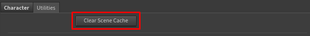
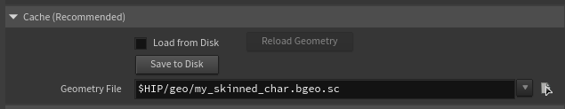

Performance & Caching
Character Creator characters are detailed, and detailed characters use memory. This page explains where the cost comes from and how to keep your sessions fast and lean.
The fastest fix: import as USD
Version 1.2's USD import mode sidesteps almost all of this cost, and it's the default. Character Creator's USD export keeps the facial blendshapes sparse, and the tool now keeps them sparse all the way through deformation — so a heavy HD character imports in about a second and runs at a few gigabytes while animating, where the same character costs 20–40 GB via FBX (in our tests, the heaviest HD character went from ~26 GB to under 3 GB). If performance or memory is a concern, exporting and importing as USD is the single biggest thing you can do. See USD vs FBX.
The one trade-off: because the sparse path recomputes the facial deformation each frame instead of holding gigabytes of pre-expanded data, scrubbing a very heavy HD character is somewhat slower per frame. On standard characters you won't notice.
The rest of this page applies mainly to FBX import, which still has to expand the character on load (and which you'd use for FBX-only features like wrinkles). One thing USD does not change is playback memory over long frame ranges — see
Why the first FBX build is slow
When you import an FBX character, the slow part is Houdini loading and expanding it — particularly its blendshapes (the facial expression targets). A fully-featured CC character has many of these, and expanding them is memory- and time-intensive. This is inherent to how Houdini handles FBX character data, not something specific to this tool. (USD import avoids it — see above.)
The good news: this cost is paid once, at build time. After that, adjusting your look on the controller is fast, because the materials just reference the controller — they don't re-cook the character.
Expect a heavy or HD character imported via FBX to use a substantial amount of RAM once loaded — this is normal for film-quality character data in Houdini. Lighter characters are correspondingly cheaper, and USD import is cheaper across the board.
Keeping look-dev fast
While you're working on the look, use these to stay responsive:
- Quality ▸ Preview — turns off subsurface scattering and uses cheap eyes. The single biggest speed-up. (See The Lookdev Controller.)
- Displacement ▸ Disable or Bump — true displacement is expensive; use it only for final renders.
- Hero Eyes off — for any character whose eyes aren't the focus.
Switch all of these to full quality only when you're ready for final renders.
Managing memory
FBX animation clips are heavy
FBX animation is the single biggest driver of memory use in the tool — bigger than the character itself. Each FBX clip you add to the database uses a significant amount of memory, and the cost scales with the clip's length: Houdini holds the expanded character for every frame in the range. A few hundred frames is comfortable; multi-thousand-frame clips can balloon RAM fast. Keep your clip frame-ranges to what you actually need, add only the clips you'll use, and use Remove Animation to free clips you're done with. USD motion clips sidestep this — they store lightly and load instantly regardless of length, so prefer them when available. (Note this is about how the clip is stored; playing a long range still fills the playback cache in either mode — see the next section.) (See Animation.)
Long animations and playback memory
This one applies to both USD and FBX, and is separate from import cost. Once a character is animated, Houdini caches the deformed mesh for every frame you play or scrub so playback stays smooth. For a heavy or HD character that's roughly 20 MB per frame, so a several-hundred-frame range can add 10–20 GB on top of the character itself — and it grows the more of the range you touch.
USD does not avoid this: the per-frame deformed mesh is the same size whichever way you imported, so playing a long animation fills the cache the same. The difference is the baseline it stacks on — in USD mode the character itself only costs a few gigabytes, so even with a full playback cache you stay far below FBX-mode totals.
To keep it under control:
- Lower Houdini's geometry cache limit — Edit ▸ Preferences ▸ Cache, "Cache Memory (MB)". This is a hard ceiling on exactly this memory; a smaller value trades some scrub smoothness for a lower RAM cap.
- Play only the range you need — the cache fills in proportion to the frames you actually visit. Set your playback range to the shot, not the whole clip.
- Clear Scene Cache (below) after you're done scrubbing a heavy range.
Clear Scene Cache
The Clear Scene Cache button (in the Utilities section) unloads cached geometry from Houdini's caches to reclaim memory — useful after deleting characters or removing animation clips.

Geometry that's currently displayed won't unload
Houdini keeps actively-displayed data resident by design. Clear Scene Cache reclaims cooked data that's no longer needed (from deleted characters or removed animations), not the character you're currently looking at. To free a loaded character's memory, delete or bypass its nodes first, then clear the cache.
Skin Cache (Save / Load to Disk)
FBX mode only
The Skin Cache exists to avoid the slow FBX expansion. USD import is already about a second, so the cache is unnecessary there — its folder is hidden in USD mode. This section applies to FBX import.
The first FBX import of a heavy or HD character is the slow part. To avoid paying that cost every time you open the scene, the tool lets you save the character's cooked geometry to a cache file on disk and load that back instantly.
In the Skin Cache (recommended) folder on the Reallusion Importer node:
- Save to Disk — writes the current character geometry to a cache file (
.bgeo.sc) at the location set in the Geometry Cache File field. Recommended for heavy/HD characters. - Load from Disk — loads the cached geometry from disk instead of re-importing and re-expanding the FBX. Much faster for heavy characters.
- Reload — re-reads the cache from disk (use after re-saving the cache).

Workflow
Import the character once, click Save to Disk, then switch to Load from Disk. From then on the character loads from the fast cache instead of the slow FBX expansion. Re-save whenever you change the source character.
Keep the FBX File set
The cache accelerates the geometry side only — the heavy mesh and blendshape expansion. The skeleton and animation always read from the FBX, so the FBX File field must stay filled even when loading from disk (the cache makes it fast, not optional).
About the node's second output: the Reallusion Importer node has two outputs. The first is the finished character. The second, Utility Cache, is an internal tap of the character's rest geometry that the Save to Disk button reads from — it isn't meant to be wired into your scene. Leave it unconnected.
Multiple characters
You can have several characters in one scene — each gets its own stem-prefixed nodes and its own lookdev controller, so they don't interfere with each other. Just be mindful that each one carries its own memory cost. On a memory-constrained machine, work with one character at a time.